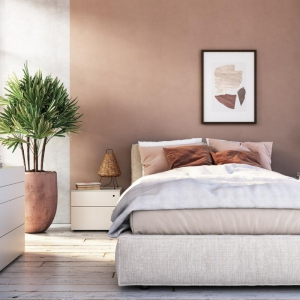
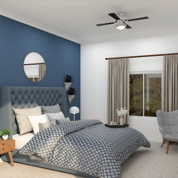
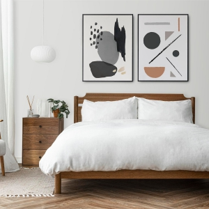

იმისათვის, რომ კარგად დაისვენოთ და კარგად დაიძინოთ, უფრო მგრძნობიარე უნდა იყოთ საძინებლის ფერების არჩევისას. მაგალითად, თუ გიყვართ ადრე გაღვიძება, მაშინ თბილი ტონები უფრო შესაფერისია თქვენთვის, თუ თქვენი ძილი მოუსვენარია - ცივი ფერების დამამშვიდებელი ეფექტი დაგეხმარებათ დაისვენოთ.
ჩვენი RAL და PENCOLOR ფერის კატალოგი, რომელიც მოიცავს ასზე მეტ ჩრდილს, დაგეხმარებათ აირჩიოთ ფერი თქვენი საძინებლისთვის. მათი წყალობით თქვენ აუცილებლად იპოვით თქვენთვის და თქვენი ინტერიერისთვის შესაფერის ფერს.



რას მივაქციოთ ყურადღება ფერის არჩევისას
კლასიკური კედლის ფერები საძინებლისთვის არის თეთრი, კრემისფერი და მათი ჩრდილები. ეს ფერები უფრო ხშირად გამოიყენება, რადგან ისინი ნეიტრალურია, არ ღლის ადამიანებს და ეხამება ნებისმიერ ავეჯს. მაგრამ თქვენ შეგიძლიათ გამოიყენოთ სხვა ჩრდილები, რომ დაამატოთ სილამაზე კედლებს, გაითვალისწინეთ შემდეგი:
საძინებლის მდებარეობა გეოგრაფიულ მიმართულებებთან შედარებით;
ოთახის სიგანე და სიგრძე;ზოგადი ინტერიერის ფერის ტონები;
თქვენი პირადი პრეფერენციებისა და საყვარელი ფერების თავსებადობა;
ინტერიერის დიზაინის ფერის ტენდენციები.
კონტაქტი
+995 597 68 90 90
+99412 502 45 50
Paatarekhviashvili15@gmail.com
ცენტრალური ოფისი - ბადამდარის გზატკეცილი. 27, ბაქო, აზერბაიჯანი